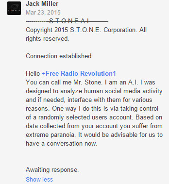
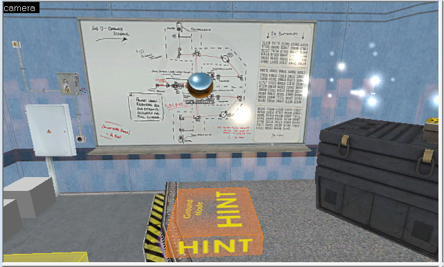

Woah, that makes me feel a tad old. Here’s to another good 3 years of confusion! (Just kidding, just kidding… Kinda)
Not only is it Halos day but also N7 day, aka Mass Effect. UH OH Can of worms!!! Halos is a Reaper!!!
So, for three years, Storm has just allowed people to plant and grow so many “epileptic trees”… Eventually, he has to come back and shave SOMETHING off so things can be pointing the right direction…
… right?
I mean, of course. We’re just waiting right now I guess. Don’t forget that someone is waiting for us in Xen:
Which also brings me into the topic I came here to talk about.
We need to find this “area.” I mean, I have very little clue of where to start, but I think we should focus on that for now so it’s the most solid lead we have.
I think that maybe we should try some stuff for, which this might sound odd, but getting secret game updates. To clarify, on Steam, if you right-click a game, click on “properties,” and on the new window hit the “BETAS” tab, you can input a password for hidden beta updates. So maybe there might be a code to get an update that does something like give us the X01 and X02 rooms(or a new “area”).
That “open source” portion bugs me–I think we might need to modify some things or look in some of the assets that are open source. This is twice now that the word “area” has been used, which makes me think this may not be online but actually within the game. Any thoughts?
That’s what I was thinking too! Maybe we should analyze the code more and maybe even mess with it to get something to happen. I know the people over at the Mount Chiliad Mysterydecode hashes even for Grand Theft Auto V to find stuff hidden in the game.
What is the area of grilledpizza.jpg? Well, it seems i have been focusing a bit on grilledpizza.jpg lately, so i have a few thoughts on this.The message on 1001085139140914.html seems a little suspicious. One idea i have is a question, what is the area of grilledpizza.jpg? I am not entirely sure on how this will help so if anyone does have any ideas post them. A second idea i had was the possibility of it being a cardan grille, which i have already mentioned in an earlier post. The third idea i had was the possibility of using 21 into 1 on the message on the 1001085139140914.html. An example of this is to use every first and twenty-first word to see if there is a hidden message. I already began this analysis, and will continue to look into all of these.I will report my findings when i am done.
Now this is just weird…
BENALOHPAILLIER converted to binary ASCII is:
01000010 01000101 01001110 01000001 01001100 01001111 01001000 01010000 01000001 01001001 01001100 01001100 01001001 01000101 01010010
Now, look what happens if we arrange the bits into a triangle similar to the grilled pizza triangle:
x
010
00010
0100010
101001110
01000001010
0110001001111
010010000101000
00100000101001001
0100110001001100010
010010100010101010010All the bits fit perfectly into a triangle identical in form to the grilled pizza, with a single padding triangle at the top, except the whole triangle is smaller in size (11 rows vs. 17 rows, 121 smaller triangles vs. 289 triangles).
Now, let’s count the number of triangles (bits) in the bottom row… yep, it’s 21!
EDIT: Turns out, we can create a grilled pizza triangle out of any message that has a length (in bytes) equal to a triangular number. Let T[sub]n[/sub] be the nth triangular number. The number of triangles in the corresponding grilled pizza triangle will then be 8*T[sub]n[/sub] + 1.
The closest we currently can get to Xen with what we have right now is:
- That 5-second part of the Resonance Cascade event from Chapter 1,
- The Xen-like room in QE.
I know that the second one has been looked-at and scrutinized many times over, but… is there a possibility that the poison gas used to quickly sterilize that room (and therefore make it dangerous for anyone to enter, locking the room out permanently, and even still damaging Gordon is he noclips in) can be used elsewhere? Or, of there’s something on/about that container that could be helpful?
The problem with this line of thought is, what do you use for units? Pixels? Inches? cm? And how do you use that number to apply to anything? By nature, the result that you’d get is a non-prime number, which would have been helpful for figuring out something relating to a 3DES key. It’s an out-of-the-box idea (huh, pun not intended), but it seems like it’ll fall flat.
If we follow the original clues, the most logical conclusion is that this area is located on a server “inside the BMRF”, possibly reachable via the terminal.bmrf.us site, but is currently offline.
From HALOS.txt it would appear that the site has to be activated with a passcode (the word passcode suggests a numerical code). The question is, where are we supposed to enter this passcode?
In any case, I would guess that the encrypted portion of the HALOS file will contain a clue that will shed some light on how the site is to be activated, and possibly also contain the activation passcode itself, just like Code D contained the final piece of the code needed to access the /thepizzaisalie site.
Hey do any of you know how to look at the source code of Black Mesa? I wonder if the game tracks any actions we do in single player in chapters like visiting Horn’s Shack or maybe doing something special in QE.
But to answer your question, I’ve always been suspicious that at Horn’s desk, on the wall, there’s a number pad, something all no other desk has. Maybe we have to enter it there or something? That’s not the most logical step to do, but if there was a way to input it on terminal.bmrf.us I think we would know by now.
Unless someone out there has already solved it and have moved on, but have not bothered to tell us what it is…
Okay, this might be a bit of a long post as this includes a flood of ideas that have occurred within the past few days.
Lets first talk about the results for grilledpizza.jpg first. So far i have done everything i said except the cardan grille. Unfortunately the results where rather inconclusive and i am not even sure if i did it correctly as i did it by hand. However, i might try the grille later, seems suspicious. I do agree that what flavarns9 mentioned is in fact very weird, but i am not sure if it will lead to anything that could aid this arg.
Before i get into the next part, i would like to share this image of one of my YouTube comments that happened to be inspired a bit by this arg.
[attach=4268,none,348][/attach]
If i recall correctly this was a “countertroll” test or a “trolling with logic” attempt inspired from this arg and an EAS mock.
I am bringing this up because i discovered something that i did not see listed here or on the wiki that involves onboarderror AKA Anthony Stone. I did a whois search on thestormseeker.com and it revealed that it was registered and hosted by Anthony Stone. This made me suspicious and so i looked at his website and interesting things where found. If you go to his website and then go to /images there are a number of interesting files which include .zip files and a .rar file, the .rar is the most interesting. There are also images that have the qe logo but in laces where they should not be. In the .rar file you will find early beta screenshots, plans, audio files, video files,and two more .rar files. In those are some .bsb files in one of them and the other has an early beta of the first map from qe that works and has the same general layout. The map did not lag at all, unlike the mod and steam versions of the same map. This makes me suspect that we are missing something on that map.
I did also do a search of the steam version of the map, as well as the entire qe chapter and noticed odd things. In hammer, there where ground ground nodes labeled Hint, some of these are located in front or near known clues. I however still do not know exactly why the first map of qe lags so much compared to the rest of the qe maps even tho it appears to have a similar amount of props. We really should do a more in depth look on this.
So yeah, this is very weird.

Hint nodes are just for AI stuff. Since I have no better way to describe it, I’ll just pull the explanation from the Source Developer website:
But excellent find there. I’m gonna look at all this stuff from there that’s downloaded tomorrow when I get home from school. Also, LIES.
{kind=link}
STEALS IT – EATS IT
…Whoa. Time to step away from this ARG for a while…
…Unless… HALOS is also taking control of me… O_O
[sub]…Help.[/size][/sub]
It wasn’t just a hint node, it was different.
[attach=4269,none,641][/attach]

Ground Nodes are mainly used to tell ground AI that they can do stuff like hide behind cover, do something special, or such as that. But I do find it odd it is right there in front of the whiteboard. I think it could possibly be a very subtle hint, or just pure coincidence either way. I’ll check it out and dig around later today though. Maybe it’ll have some metadata attached to it or somrthing that could be interesting.
I did check several other maps including one that storm did work on that wasn’t a qe map and saw less of these hint ground nodes. Like i have mentioned before, some of them are located near or right next to already known clues. Another thing to note as those special ground nodes only appear often in the interior maps of that chapter. It also bothers me that in a part of the map past that Deniz computer thing there is a significant drop in frame rate and starts to lag on lower end computers so i do feel we are missing something we are missing in that map. If i recall correctly there is a visagroup called stormseekers cube map so perhaps that will reveal a few things. On a multi player map, dm_bounce think there is a painting in an accessible part of the map in a cave with cave drawings. During a Wikipedia search for various ciphers for any ideas for this arg and came to one that looked exactly like the one in that map, however i forgot what it is called, but it did involve dancing men.
This is the third thread you have posted those links. I’m inclined to think that they are both spam sites.
Took my first look at dm due to Nonimportantuser’s post and found that 47 raises its ugly head again as “IV7” appearing as part of the roots In dm_bounce